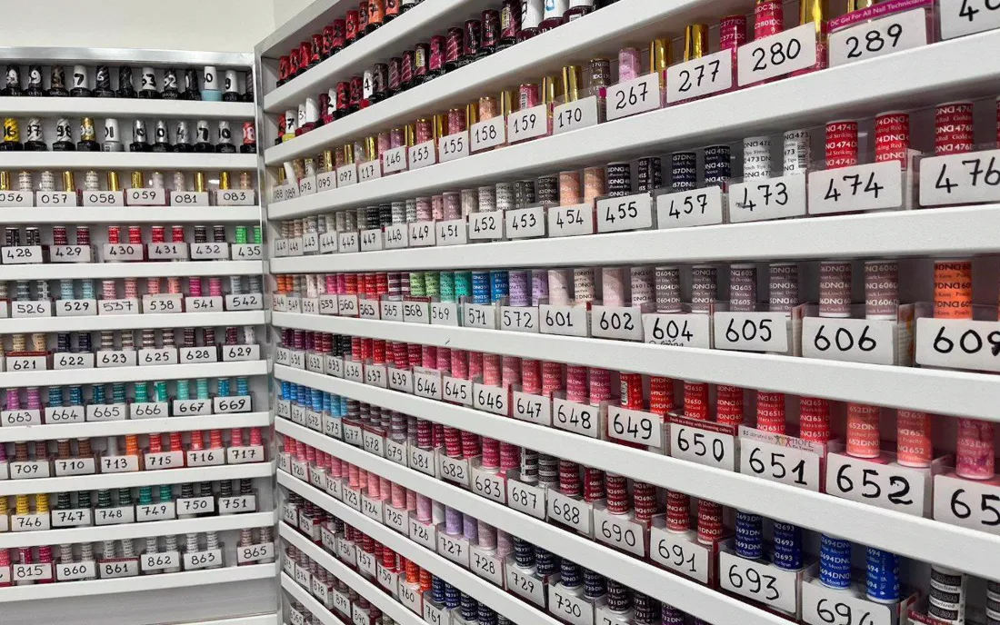

Devant le mur de vernis : une méthode pour ne pas y passer le déjeuner
Par 36 Beauté · Novembre 2026 · 2 min de lecture
Au 36 rue Belgrand, tout un mur est couvert de vernis, rangés en étagères et numérotés. C’est très beau. C’est aussi le meilleur moyen de rester planté là, avec un rose dans chaque main.
Voici comment décider sans y passer votre pause.
1. Commencez par la rangée, pas par le flacon
Ne regardez pas tout. Choisissez d’abord une famille : nude, rouge, rose, foncé, ou « je veux qu’on me pose des questions ». Vous venez d’éliminer les trois quarts du mur en une seconde.
2. Posez le flacon contre votre main
La couleur dans le flacon et la couleur sur vous sont deux couleurs différentes. Votre peau a un fond plus chaud ou plus froid, et c’est elle qui décide. Un nude peut être superbe sur quelqu’un et donner l’air fatigué à sa voisine. Rapprochez la teinte de vos doigts, sans rien imaginer. Si elle fait ressortir la peau, vous la tenez. Si la main paraît terne, reposez-la.
3. Pensez au jour où vous la verrez
Pas à la photo. À un mardi matin, sur votre clavier, au bout de trois semaines. Le rouge vif demande un peu d’assurance. Un beige clair pardonne mieux la repousse. Un bleu nuit, couleur de notre devanture (on n’est pas objectifs), fait habillé avec à peu près tout.
4. Donnez-vous une limite
Deux finalistes, pas plus. Ensuite, demandez : un avis extérieur tranche vite, surtout celui de quelqu’un qui voit des mains toute la journée. Et si vous aimez vraiment les deux, rien n’interdit de garder l’autre pour les pieds.
Un mot sur la lumière
Un salon est très éclairé, et c’est tant mieux pour travailler. Mais un même vernis ne raconte pas la même histoire sous des spots et dans la rue. Les tons nude et les gris sont les plus sensibles à ce changement. Si vous hésitez sur l’un d’eux, approchez-vous de la vitrine, ou regardez-le quelques secondes loin du plafond. Vous gagnerez une mauvaise surprise de moins en sortant.
Et pour une occasion ?
Mariage, photos, entretien important : ne testez pas une couleur inédite la veille. Faites le pari une fois, quelques semaines avant, sur une journée sans enjeu. Et prenez rendez-vous un ou deux jours avant l’événement, pour avoir des ongles nets sans risquer d’accroc de dernière minute.
5. Notez le numéro
C’est le conseil le plus utile de cet article et il tient en une ligne. Chaque teinte a son numéro : photographiez-le. La prochaine fois, vous pourrez dire « le même » et avoir vraiment le même, au lieu de décrire « le rose, vous savez, pas trop rose ».
Si vous n’arrivez vraiment pas à trancher, il reste la french à 5 € en supplément. Elle ne se trompe presque jamais.
On s’occupe de vos ongles ?
Prestation et créneau se choisissent sur notre page Planity.
Réserver en ligne